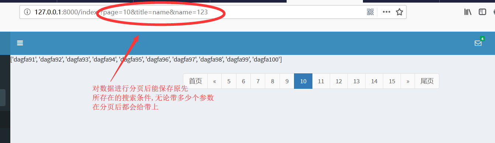

import copy
class Pagination:
def __init__(self, current_page_num, all_count, request, per_page_num=10, page_count=11):
"""
封装分页相关数据
:param current_page_num: 当前页码数
:param all_count: 数据库中总数据条数
:param per_page_num: 每页显示的数据量
:param page_count: 最大显示页数
"""
try:
current_page = int(current_page_num)
except Exception as e:
current_page = 1
# 页码数小于1时显示第一页
if current_page < 1:
current_page = 1
# 取总页码数
self.all_page_count, temp = divmod(all_count, per_page_num)
if temp:
self.all_page_count += 1
# 页码数大于最大页码数时显示最后一页
if current_page > self.all_page_count:
current_page = self.all_page_count
self.current_page = current_page
self.per_page_num = per_page_num
self.half_page_count = int((page_count - 1) / 2)
# 总页码数小于最大页码数
if self.all_page_count < page_count:
self.start_page = 1
self.end_page = self.all_page_count + 1
else:
if self.current_page < self.half_page_count:
# 当页码条数据靠近最左边时
self.start_page = 1
self.end_page = page_count + 1
elif self.all_page_count - self.current_page < self.half_page_count:
# 当页码条数据靠近最右边时
self.start_page = self.all_page_count - page_count + 1
self.end_page = self.all_page_count + 1
else:
# 页码条正常显示在中间位置
self.start_page = self.current_page - self.half_page_count
self.end_page = self.current_page + self.half_page_count + 1
# 获取get参数: <QueryDict:{key: value}>
params = request.GET
# 不进行deepcopy将无法改变其里面的值
self.new_params = copy.deepcopy(params)
@property
def start(self):
return (int(self.current_page - 1)) * self.per_page_num
@property
def end(self):
return int(self.current_page) * self.per_page_num
def show_html(self):
html_list = []
if self.current_page == 1:
first_page = '<li class="disabled"><a>{0}</a></li>'.format('首页')
else:
# 将page传入new-params中
self.new_params['page'] = 1
# 对new_params进行urlencode格式化: 'key=value&key2=value2&page=1'
first_page = '<li><a href="?{0}">{1}</a></li>'.format(self.new_params.urlencode(), '首页')
# 将"首页"html代码加入html_list中
html_list.append(first_page)
if self.current_page == 1:
prev_page = '<li class="disabled"><a>{0}</a></li>'.format('«')
else:
self.new_params['page'] = self.current_page - 1
prev_page = '<li><a href="?{0}">{1}</a></li>'.format(self.new_params.urlencode(), '«')
# 将"上一页"html代码加入html_list中
html_list.append(prev_page)
for i in range(self.start_page, self.end_page):
if self.current_page == i:
page_bar = '<li class="active"><a>{0}</a></li>'.format(i)
else:
self.new_params['page'] = i
page_bar = '<li><a href="?{0}">{1}</a></li>'.format(self.new_params.urlencode(), i)
# 将"每一页"html代码加入html_list中
html_list.append(page_bar)
if self.current_page == self.all_page_count:
next_page = '<li class="disabled"><a>{0}</a></li>'.format('»')
else:
self.new_params['page'] = self.current_page + 1
next_page = '<li><a href="?{0}">{1}</a></li>'.format(self.new_params.urlencode(), '»')
# 将"下一页"html代码加入html_list中
html_list.append(next_page)
if self.current_page == self.all_page_count:
last_page = '<li class="disabled"><a>{0}</a></li>'.format('尾页')
else:
self.new_params['page'] = self.all_page_count
last_page = '<li><a href="?{0}">{1}</a></li>'.format(self.new_params.urlencode(), '尾页')
# 将"尾页"html代码加入到html_list中
html_list.append(last_page)
return ''.join(html_list)class CustomerView(View):
def get(self, request):
customer_list = Customer.objects.all()
page = request.GET.get('page')
# 实例化pagination对象
pagination = Pagination(page, customer_list.count(), request, per_page_num=1)
# 对数据列表进行分页
customer_list = customer_list[pagination.start:pagination.end]
context = {
'customer_list': customer_list,
'page_html': pagination.show_html()
}
return render(request, 'customer_list.html', context)
def post(self, request):
pass<nav aria-label="Page navigation" class="pull-right">
<ul class="pagination">
{{ page_html|safe }}
</ul>
</nav> 